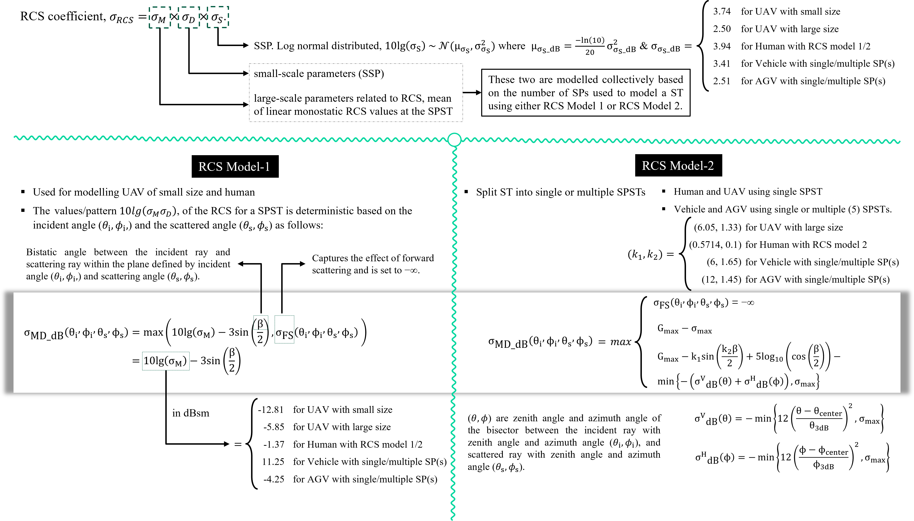
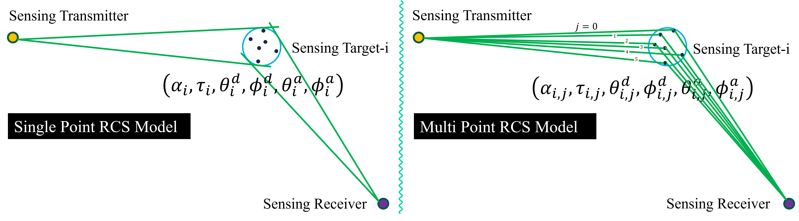

ISAC Channel Model
The very high level picture of the ISAC channel model is as follows:
{kind=link}
1. Channel Modelling Discussions and Progress in 3GPP
The following table [5] provides a summary of the discussions and progress related to ISAC channel modeling in 3GPP:
RAN1 Research |
# 116 Feb 2024 |
#116bis Apr 2024 |
# 117 May 2024 |
# 118 Aug 2024 |
#118bis Oct 2024 |
# 119 Nov 2024 |
# 120 Feb 2025 |
#120bis Apr 2025 |
# 121 May 2025 |
|---|---|---|---|---|---|---|---|---|---|
Deployment scenario and calibration |
Prioritised UAV, AGV, eVTOL scenarios |
Evaluation templates for sensing scenarios |
Evaluation parameters for UAV defined |
Evaluation parameters for UAV defined |
Evaluation tables for UAV use cases |
Evaluation tables updated |
Simulation assumptions for large scale cal. |
Calibration scenarios (UAV only) |
Calibration scenarios (e.g., consistency) |
Channel framework |
H-ISAC = H-target + H-Background |
Models incl. target & background |
Discussion on ex. TRs for TRP |
Discussion on ex. TRs for prep cases |
Power normalisation approach discussed |
||||
Physical object model |
ST model defined |
RCS models |
RCS +
|
RCS extensions |
Monostatic RCS |
A*B^2 model |
Bistatic RCS |
Last WAs confirmed |
|
Target channel |
Target channel |
DL models for channel |
Correlation coupling |
Power scaling |
Power threshold |
||||
Background channel |
Existing TRs start |
Threshold set for |
Drop N RPs |
Drop N + clustering |
μp=3 RPs from Gamma |
Values of UT/UST |
|||
Spatial consistency |
Discussed |
1x host UAV scen. |
Reuse TR model |
||||||
Environment Objects |
Preliminary |
Consider discussion |
Existing spatial |
EO type-1 TRs |
EO type-2 defined |
defined |
|||
Doppler |
Doppler equation |
Placeholder in draft |
|||||||
Blockage |
Considered but limited |
Reuse TR ST-SK |
|||||||
2. 3GPP ISAC Channel Model
I. Introduction and Standardization Timeline
To mitigate the limitations of conventional communication-centric channel models in evaluating Integrated Sensing and Communication (ISAC) systems, the 3GPP Technical Specification Group (TSG) Radio Access Network (RAN) approved a dedicated Study Item (SI), titled “Study on channel modelling for ISAC for NR,” during the RAN #102 plenary meeting in December 2023 [50]. The primary technical mandate was assigned to RAN Working Group 1 (RAN1), which is responsible for physical layer specifications. The objective of this SI was to develop a standardized channel modeling framework capable of supporting link- and system-level evaluations for representative ISAC deployment scenarios and use cases. The scope was partitioned into two primary core work items:
ISAC deployment scenarios and calibration.
ISAC channel modeling methodologies.
Technical deliberations commenced at the RAN1 #116 meeting (February 2024) and concluded at the RAN1 #121 meeting (May 2025). The standardization process spanned nine formal sessions—including intermediate tracking sessions (#116, #116bis, #117, #118, #118bis, #119, #120, #120bis, and #121)—complemented by offline interactive sessions and dedicated email rapporteur discussions. The chronological progression and major milestones are illustrated in Fig. 3 [51]. This collective standardization effort culminated in the formal integration of the finalized ISAC channel model into the 3GPP TR 38.901 V19.0.0 release specification [23].
II. ISAC Deployment Scenarios and Evaluation Parameters
To establish a foundational baseline, the evaluation framework adopts established communication topologies and specifies baseline Sensing Targets (STs). Formally ratified at the RAN1 #116 meeting, these baseline targets include Unmanned Aerial Vehicles (UAVs), indoor and outdoor human targets, automotive vehicles (primarily for outdoor environments), Automated Guided Vehicles (AGVs) operating within indoor factory environments, and road/railway hazard obstructions as defined in 3GPP TR 22.837. Within these deployment scenarios, any arbitrary Transmit-Receive Point (TRP) or User Terminal (UT) spatial coordinate can be designated as a sensing transmitter (\(\text{Tx}\)) or sensing receiver (\(\text{Rx}\)), thereby natively supporting monostatic, bistatic, and multistatic sensing topologies.
From the RAN1 #116bis through the RAN1 #119 meetings, the working group systematically finalized the evaluation parameter profiles for these standardized STs. The standardized parameter spaces are categorized into the following six core dimensions:
Applicable Communication Scenarios: Specification of the baseline propagation environments (e.g., Urban Micro-cellular (UMi), Urban Macro-cellular (UMa), Indoor Factory (InF), and Indoor Office (InO)).
Sensing Transceiver Properties: Architectural configurations of the sensing \(\text{Tx}\) and \(\text{Rx}\) nodes, including antenna array geometries, polarization characteristics, radiation patterns, and maximum equivalent isotropically radiated power (EIRP).
Sensing Target (ST) Kinematic and Physical Attributes: Specification of Line-of-Sight (LoS)/Non-Line-of-Sight (NLoS) propagation conditions relative to the cluttered background, structural dimensionality (2D or 3D mobility profiles and spatial distributions), instantaneous orientation vectors, and physical geometric dimensions (e.g., cross-sectional bounds and volumetric profiles).
Minimum 3D Geometric Displacements (Nodes to Target): Boundary conditions defining the minimum permissible 3D spatial separation between any \(\text{Tx}/\text{Rx}\) pair and the operational ST to ensure the validity of far-field propagation assumptions.
Minimum Inter-Target 3D Spatial Displacements: Proximity constraints establishing the minimum 3D distance between adjacent co-existing STs to prevent unmodeled near-field electromagnetic interactions.
Environmental Objects (EO) and Clutter Field Properties (Optional): Parameter vectors characterizing the density, material composition, spatial distribution, and mobility statistics of surrounding environmental macro-scatterers acting as static or dynamic clutter.
The numerical quantification and continuous updates of these parameter spaces are structurally aligned with TR 38.901 [23]. To maintain backward compatibility and empirical accuracy, specific sub-scenarios integrate specialized parameter boundaries from supplementary 3GPP Technical Reports:
These configured parameter matrices are directly applicable to Monte Carlo system-level simulations. For network calibration phases, system topologies must configure a pre-defined, deterministic percentage of sensing-capable TRPs and UTs to maintain statistical consistency across independent simulators.
III. Modelling Physical Objects
Its crucial to design mathematical models that accurately capture the effect of the physical objects in the wireless channel models. The exhaustive and exact modelling of physical objects is extremely complex and computationally prohibitive. Therefore, the standardization process has focused on developing simplified yet representative models that can capture the essential characteristics of the physical objects while maintaining computational efficiency. The following two aspects allows to capture the effect of physical objects to fullfil the scope of the work defined in Release-19 and Release-20 of 3GPP:
Radar Cross Section (RCS) Characterization
Polarization and Orientation Effects
A. Radar Cross Section (RCS) Characterization
RCS models allows the characterization of the scattering properties of the physical objects in the wireless channel. The RCS is a measure of how much power is reflected back to the receiver by an object when it is illuminated by a radar signal. The RCS can be influenced by various factors such as the size, shape, material properties, and orientation of the object. 3GPP designed two RCS models for varied level of accurate and complexity. The glimpe of the RCS models are availble in the following figure:
{kind=link}

Single Scattering Points based Model vs Multiple Scattering Points based Model
Table 7.9.2.1-2/3/4/5/6/7 provides the RCS model parameters for UAVs, humans, vehicles with a single SP, vehicles with multiple SPs, AGVs with a single SP, and AGVs with multiple SPs, respectively. Although parameters are provided for all scattering points (SPs) associated with each physical object, the single scattering point–based model treats all nearby SPs as a single SP and assumes that the delays and angles are the same for all SPs. On the other hand, the multiple scattering point–based model treats the SPs as distinct points and assumes different delays and angles for each SP as shown in following figure.
{kind=link}

How to compute Bistatic Angle
The bistatic angle (β) is defined as the angle between the incident ray (from transmitter to target) and the scattered ray (from target to receiver). It is measured at the target within the plane defined by the incident angles \((\theta_i, \phi_i)\) and scattering angles \((\theta_s, \phi_s)\). The incident and scattered directions are represented as unit vectors in spherical coordinates.
{kind=link}
Incident direction cosine vector:
Scattered direction cosine vector:
The bistatic angle is computed using the dot product of the two unit vectors:
Expanded form:
Interpretation the bistatic angle:
β = 0° → Forward scattering (Tx and Rx aligned)
β = 180° → Backscattering (monostatic case)
0° < β < 180° → General bistatic geometry
Notes on using the bistatic angle in channel modeling:
In single-point scattering models, one bistatic angle is computed per object.
In multi-point models, each scattering point has its own bistatic angle.
The bistatic angle influences Radar Cross Section (RCS), scattering strength, and angular diversity in the channel model.
III. Mathematical Framework and Channel Modeling Methodologies
Core Channel Decomposition and Power Normalization
In contrast to the purely communication-centric paradigms in 3GPP TR 38.901 V18.0.0, the ISAC channel modeling framework approved at the RAN1 #116 meeting decomposes the joint propagation environment. Let \(\mathbf{H}_{\text{ISAC}}(t, \tau) \in \mathbb{C}^{N_{\text{Rx}} \times N_{\text{Tx}}}\) represent the time-varying, delay-dependent Multiple-Input Multiple-Output (MIMO) channel matrix, expressed as:
where \(\mathbf{H}_{\text{target}}(t, \tau)\) represents the target channel matrix containing all multipath components (MPCs) interacting with, scattering from, or diffracted by the designated ST(s). Conversely, \(\mathbf{H}_{\text{background}}(t, \tau)\) isolates all background environmental MPCs that propagate independently of the STs. This additive formulation natively accommodates multi-static sensing: a single sensing \(\text{Tx}\)-\(\text{Rx}\) pair can concurrently track multiple discrete STs via superposition within a shared spatial volume, and a single ST can be explicitly modeled within the distinct cross-channel matrices of multiple distributed \(\text{Tx}\)-\(\text{Rx}\) processing pairs.
To prevent the artificial inflation of total radiated energy when stochastically instantiating independent target and background channel paths, a power normalization framework is required. The total channel power must comply with large-scale pathloss models through a conservation scaling factor \(\eta\), bounded by:
where \(\|\cdot\|_F\) denotes the Frobenius norm. While the exact allocation of the scaling scalar \(\eta\) was maintained via a technical placeholder during early sessions, its parameterization relies on empirical path-loss scaling bounds derived from the specific clutter environment.
Target Channel Modeling and Radar Cross Section (RCS) Characterization
During the RAN1 #116bis meeting, it was resolved that the physical structure of an ST is modeled discretely as either a single localized Scattering Point (SP) or an aggregation of multiple resolved spatial SPs, depending on the target’s physical dimensions and the operational signal bandwidth.
To model the electromagnetic reflectivity of these SPs, the RAN1 #118bis meeting established a structured framework for the Radar Cross Section (RCS), denoted as \(\sigma_{\text{RCS}}\). The standard defines \(\sigma_{\text{RCS}}\) using separable multiplicative factorization models to capture multi-dimensional scattering variations:
where \(A\) represents the baseline, frequency-dependent nominal RCS value derived from the target’s physical geometry (e.g., via the physical optics approximation for a sphere, cylinder, or flat plate). The terms \(B, B_1,\) and \(B_2\) represent stochastic or deterministic scaling functions that account for aspect angle variations (azimuth/elevation dependence), polarization mismatch matrices, and statistical fluctuation models (e.g., Swerling case models capturing fast or slow fading characteristics). At the final RAN1 #121 meeting, this product-based framework was populated with empirical parameter tables establishing distinct monostatic and bistatic RCS profiles for all agreed ST categories.
Target Channel Cascaded Architecture:
[Sensing Tx] ----(H_Tx->TAR)----> [Sensing Target (RCS Matrix: G_ST)] ----(H_TAR->Rx)----> [Sensing Rx]
To accurately reflect the physical propagation mechanics of radar systems, the RAN1 #118 meeting approved a concatenated sub-channel architecture for the target component. The ST is treated as a virtual transponding node, allowing \(\mathbf{H}_{\text{target}}(t, \tau)\) to be modeled as the product of two cascading sub-channels:
where \(\mathbf{H}_{\text{Tx}\to\text{TAR}}(t)\) defines the forward propagation sub-channel from the sensing transmitter to the target coordinates, \(\mathbf{G}_{\text{ST}}\) is the complex target scattering matrix embedded with the \(\sigma_{\text{RCS}}\) characteristics, and \(\mathbf{H}_{\text{TAR}\to\text{Rx}}(t)\) defines the return propagation sub-channel from the target coordinates to the sensing receiver. Subsequent meetings established optimization protocols, spatial simplification thresholds, and power-gating thresholds to truncate legacy MPCs whose relative power falls below a defined threshold (e.g., \(-25\text{ dB}\) relative to the dominant peak component), ensuring computational efficiency during system-level evaluations.
Background Channel Modeling and Specialized Features
For the background channel matrix \(\mathbf{H}_{\text{background}}(t, \tau)\), bistatic deployment modes directly reuse the existing stochastically generated cluster frameworks specified in communication standards (such as 3GPP TR 38.901). However, the monostatic background channel model—where the transmitter and receiver are co-located—requires distinct geometric considerations due to the correlation of forward and reverse propagation paths.
To resolve this, the RAN1 #120bis meeting ratified the 3-Reference-Point (3-RP) modeling methodology. This approach selects three distinct spatial reference anchor coordinates within the coverage sector to serve as boundary markers for generating monostatic clutter. By computing spatial correlations, path delays, and angular spreads relative to these three fixed spatial anchors, the model ensures accurate backscatter clutter statistics while tracking the self-interference profile of co-located transceivers.
3-Reference-Point (3-RP) Monostatic Clutter Framework:
[Anchor RP 1]
/ \
/ \
[Monostatic Tx/Rx]--[Anchor RP 2]
\ /
\ /
[Anchor RP 3]
(Clutter paths are stochastically generated relative to these three spatial anchors)
Furthermore, the framework integrates supplementary propagation features discussed across multiple sessions:
Spatial Consistency: Ensures that as the ST or the transceiver nodes move continuously along a spatial trajectory, the associated channel parameters (e.g., angles of arrival/departure, cluster delays, and phase relationships) evolve deterministically rather than undergoing statistically independent re-instantiations.
Environmental Objects (EO) Interactions: Introduces time-varying shadow fading and diffraction profiles caused by dynamic obstructions masking the ST or sensing transceivers.
Doppler Shift Parameterization: Implements exact Doppler frequency vectors applied directly to individual MPCs based on the relative 3D velocity vectors of the \(\text{Tx}\), \(\text{Rx}\), and ST:
\[\nu_m = \frac{1}{\lambda} \left( \mathbf{v}_{\text{Tx}} \cdot \mathbf{\hat{r}}_{\text{Tx},m} + \mathbf{v}_{\text{ST}} \cdot \mathbf{\hat{r}}_{\text{ST},m} + \mathbf{v}_{\text{Rx}} \cdot \mathbf{\hat{r}}_{\text{Rx},m} \right)\]where \(\lambda\) is the carrier wavelength, \(\mathbf{v}\) denotes the respective 3D velocity vectors, and \(\mathbf{\hat{r}}\) denotes the unit spherical direction vectors of the \(m\)-th multipath component.
Blockage Formulations: Integrates geometric knife-edge diffraction models and stochastic blockages to capture sudden attenuation drops when human or vehicular clutter intersects the sensing line-of-sight.
The subsequent sections of this paper provide a comprehensive analysis of these newly standard-compliant ISAC channel features, develop a unified channel modeling methodology that extends the standard Geometry-Based Stochastic Model (GBSM) architecture to support target-clutter interactions, and introduce an open-source, standardization-compatible channel simulator alongside its verified calibration dataset.
3. References
The following references provide detailed information on the ISAC channel model and related aspects:
3GPP Technical Report on Channel Model: Study on channel model for frequencies from 0.5 to 100 GHz.
ETSI Proposals on : Integrated Sensing And Communications (ISAC); Channel Modelling, Measurements and Evaluation Methodology.
ETSI Proposals on : Integrated Sensing And Communications (ISAC); Use Cases and Deployment Scenarios.
A Comprehensive Survey of 3GPP Release 19 ISAC Channel Modeling.